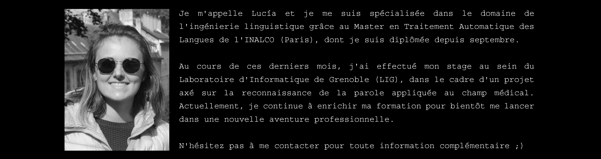
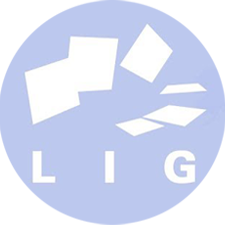

Ma formation académique et professionnelle
septembre 2019 - septembre 2020
Spécialité : Recherche & Développement.
• Traitement statistique des corpus.
• Programmation en Java, Python.
• Fouille de textes.
• Réseaux de neurones pour la reconnaissance de l’oral.
• Phonétique et phonologie comparées.
« Mise en place d’un système robuste de reconnaissance automatique de la parole appliqué au domaine médical », [PDF].
septembre 2018 - juin 2019
• Programmation : Python, C++, Perl, Bash.
• Métalangages : XML et HTML.
• Fouille de textes et construction de grammaires avec
Unitex.
• Excellente maîtrise des expressions régulières.
• Analyse lexicométrique : Trameur, AntConc, TXM, Lexico.
• Langages de requête : SQL, Cypher, XQuery, XPath.
septembre 2014 - juin 2018
Candidate au Prix Extraordinaire de Fin de Licence.
• Lexicologie et sémantique.
• Analyse du discours.
• Linguistique diachronique et synchronique.
• Phonétique et phonologie.
• Morphologie et syntaxe.

février 2020 - septembre 2020
Participation au sein du projet en collaboration BabelDr, entre le Laboratoire d'Informatique de Grenoble et l'Université de Genève, portant sur la construction d'un système de reconnaissance automatique de la parole et traduction multilingue pour le domaine médical.
Tâches principales :
• Création de modèles de langues via OpenFST, SRILM.
• Création de modèles acoustiques DNN-HMM à l'aide de
l'outil Kaldi.
juillet 2018 - septembre 2018
Traduction ANG > ESP des textes commerciaux :
• Transcriptions de vidéos.
• Chroniques de voyages.
• Avis clients.
• Recommandations des clients.
• « Bajo la sombra del cine: una guía del cine en Nueva York
(parte 1: Manhattan) »,New York Habitat [2018].
• « El cine de los distritos: un recorrido por el cine de Nueva
York (parte 2) », New York Habitat [2018].
• « Guía de viaje de verano: nuestros mejores planes en
Londres », New York Habitat [2018].
mai 2017 - juin 2017
Créatrice de matériaux didactiques visant à évaluer automatiquement les connaissances linguistiques en espagnol des étudiants étrangers.
septembre 2016 - juin 2017
Assistante de recherche chez Département de Philologie.
Tâches principales :
• Classification des documents.
• Révision textuelle : révision orthographique, biblio-
graphique et typographique d’articles universitaires.
• Entretiens personnels axés sur l'écriture académique.
septembre 2016 - décembre 2016
Cours destinés aux locuteurs non natifs d'espagnol :
• « Problématique de l’accentuation en espagnol II ». [27/09
/2016].
• « Orthographe et doutes linguistiques » [10/11/2016].
avril 2020 - mai 2020
Cours introduisant le règlement en matière de confidentialité de données et la protection de la privacité personnelle.
mai 2019 - juin 2019
Cours introduisant la linguistique de corpus et ses plusieurs implémentations dans la lexicologie, l'analyse du discours ou le traitement automatique de la langue.
juin 2018
Excellente maîtrise du français oral et écrit.
juin 2017
Excellente maîtrise de l'anglais oral et écrit.
septembre 2013
Pour en savoir plus,

Étude quantitative portant sur l'identification de patrons morphosyntaxiques trouvés sur le journal Le Monde.

Achèvement de toute une série d'exercices de programmation rapportés au langage de balisage XML et ses nombreuses fonctionnalités.